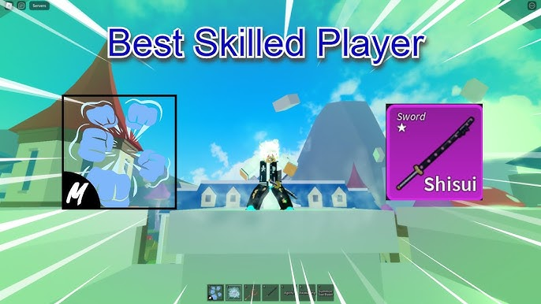

Combos difíceis
.jpg)
Então, depois de ter mostrado tipos de combos fáceis e médios, vamos agora para os combos difíceis. Vamos começar com o combo de rumble, soul cane, super human e acidum rifle. Esse é um combo skill que usa ponto em arma e é um combo bastante utilizado para ir torneios legais e para caçar bounty. O combo é:
X rumble, Z soul,
Z acidum, Click do acidum,
X acidum, Z super,
C super, teleporte e X super
.jpg)
Um combo que é que muitas pessoas gostam de usar e que é muito forte é o combo de rumble, yoru e super human. Ele é um combo skill que é bastante utilizado para caçar bounty por causa do seu dano e por causa do seu ataques que pegam de uma distância razoável. Ele é um dos meus combos favoritos, mesmo eu não tendo yoru. O combo é:
X rumble, Z yoru,
X yoru, Z super human
C super human, teleporte e X super human
Um combo que utilizei por bastante tempo para caçar bounty por causa da sua velocidade e por causa do seu dano. Esse combo é o de rumble, super human e shisui. Ele é um combo que meio difícil de se aprender, mas quando pegar o jeito vai ficar fácil o combo. O combo é:
X rumble, X shisui,
Z super human, C super human
Z shisui e X super human

Um combo difícil que poucas pessoas usam mas é muito bom, é o combo de ice, koko e super human. Ele não é um combo muito utilizado mas ele é um combo skill e muito bom de se utilizar. O combo é:
V ice, C ice,
X koko, Z super human
Z koko, C super human